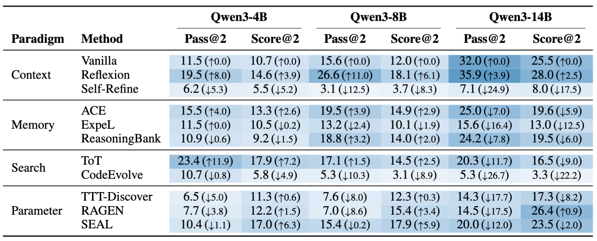
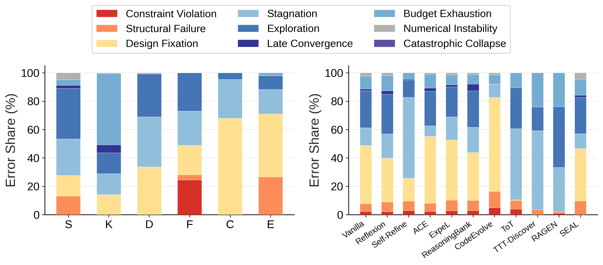
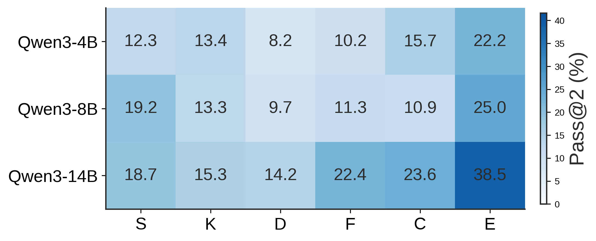

Physics Adaptation via Code Evolution
PACE-Bench
Can an agent redesign for a world that changed?
A benchmark for self-evolving agents that must adapt executable physical designs after hidden environment shifts.
- 36
- Tasks
- 6
- Physics domains
- 144
- Adaptation pairs
- 20
- Attempts per run
Results
Leaderboard
Full-benchmark performance across 36 tasks and four target stages. Higher is better.
| Rank | Method | Paradigm | Pass@2 | Relative performance |
|---|
Two independent runs per pair; up to 20 verifier interactions per trajectory.
Cost-normalized view
Score gained per wall-clock hour
Kinematics subset · 20-attempt budget · Score/Hr ↑
| Method | Paradigm | 4B | 8B | 14B |
|---|---|---|---|---|
| Tree-of-Thoughts | Search | 45.7 | 46.4 | 57.8 |
| Reflexion | Context | 29.6 | 14.7 | 25.4 |
| Vanilla | Context | 27.5 | 23.2 | 28.0 |
| ACE | Memory | 18.4 | 19.8 | 17.5 |
| CodeEvolve | Search | 7.5 | 4.1 | 3.7 |
| Self-Refine | Context | 2.0 | 2.9 | 3.6 |
ToT is the efficiency leader at every scale.
Reflexion leads absolute Pass@2, but ToT converts wall-clock time into score most efficiently. More self-evolution compute does not reliably produce better cost-normalized performance.
How it works
Adapt a working design to a changed world
The source solution passes its original environment and fails the target. The agent sees execution feedback, revises the code, and tries to recover success.
S-01Bridge Construction
One source-to-target adaptation
Key findings
Why today’s agents still fail to adapt
PACE-Bench exposes four bottlenecks behind the headline scores.
01 · Grounding
More reflection is not more evidence.
Self-Refine makes repeated internal edits before returning to the simulator. At 14B, it drops from Vanilla’s 32.0% Pass@2 to 7.1%. Reflexion reaches 35.9% by analyzing a verified failure before the next revision.
Without new environmental evidence, self-correction can amplify the same wrong assumption.

02 · Search behavior
Self-evolution oscillates between fixation and wandering.
Memory can keep retrieving an obsolete design; broad search can escape it but fail to refine any branch. ToT cuts fixation to 0.3%, yet 50.2% of its failures stagnate. CodeEvolve shows the reverse pattern, with 66.3% fixation.

03 · Scaling
Better reasoning does not remove combinatorial design search.
From 4B to 14B, Kinematics improves only 1.9 points. At 14B, Dynamics remains at 14.2% Pass@2 while Exotic Physics reaches 38.5%. Some mechanisms require a new topology—not a more polished explanation of the old one.

04 · Information
More information is not uniformly helpful.
Its value depends on whether the method can use new evidence to overturn an obsolete hypothesis.
Both analyses use selected methods on the Statics + Kinematics subsets; neither is a full-benchmark comparison.Best hidden 17.9% · best exposed 14.6%
Knowing what changed does not solve how to redesign.Reflexion 40.9 → 27.3 · ExpeL 13.6 → 36.4
Fresh visual evidence hurts context-based revision here, but helps memory overcome stale experience.What should improve next?
Task suite
36 executable worlds
Six physics domains. Every initial reference solution plays automatically.
Build for the world you have.
Adapt to the world you get.
Explore PACE-Bench ↗
Reference
Citation
@misc{zhan2026pacebenchbenchmarkingphysicsadaptation,
title={PACE-Bench: Benchmarking Physics Adaptation via Code Evolution in Dynamic Environments},
author={Yuhao Zhan and Bingxiang He and Zecong Tang and Chaojun Xiao},
year={2026},
eprint={2608.14441},
archivePrefix={arXiv},
primaryClass={cs.AI},
url={https://arxiv.org/abs/2608.14441},
}